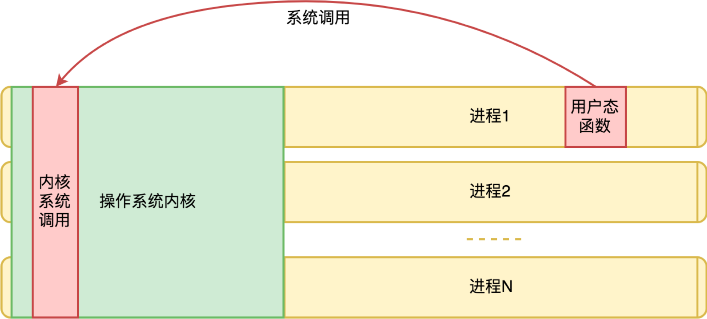
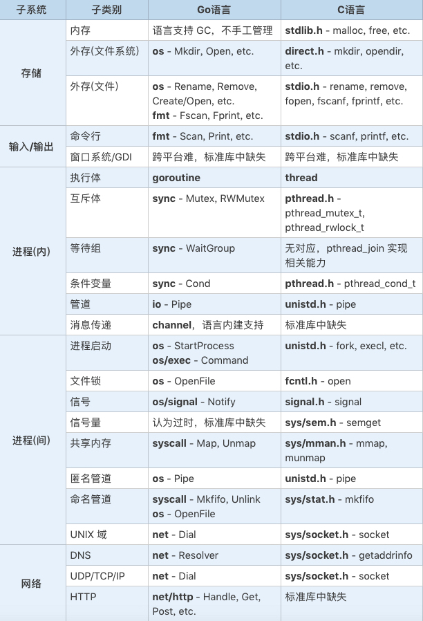
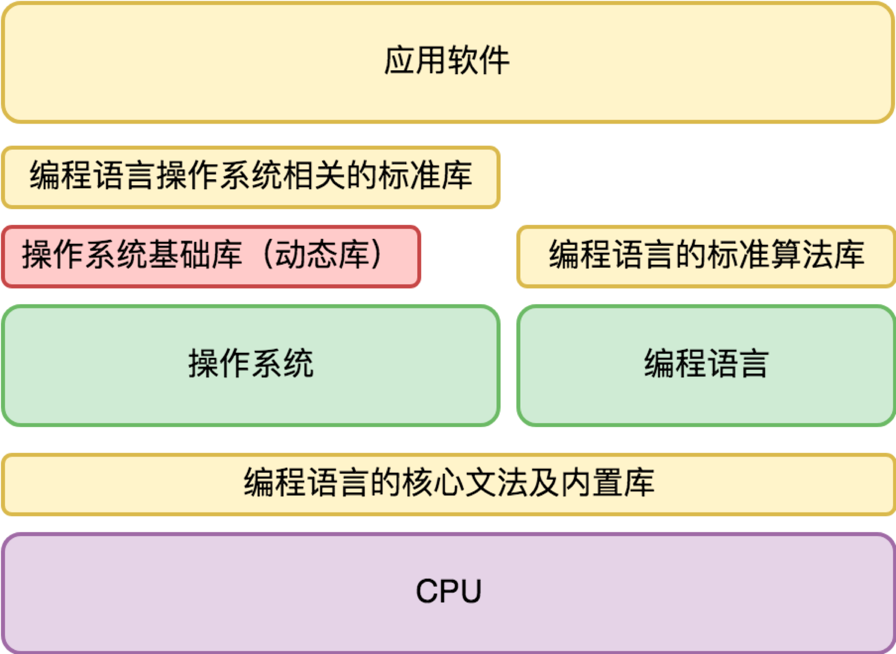

- 00 开篇词 怎样成长为优秀的软件架构师？.md.html
- 01 架构设计的宏观视角.md.html
- 02 大厦基石：无生有，有生万物.md.html
- 03 汇编：编程语言的诞生.md.html
- 04 编程语言的进化.md.html
- 05 思考题解读：如何实现可自我迭代的计算机？.md.html
- 06 操作系统进场.md.html
- 07 软件运行机制及内存管理.md.html
- 08 操作系统内核与编程接口.md.html
- 09 外存管理与文件系统.md.html
- 10 输入和输出设备：交互的演进.md.html
- 11 多任务：进程、线程与协程.md.html
- 12 进程内协同：同步、互斥与通讯.md.html
- 13 进程间的同步互斥、资源共享与通讯.md.html
- 14 IP 网络：连接世界的桥梁.md.html
- 15 可编程的互联网世界.md.html
- 16 安全管理：数字世界的守护.md.html
- 17 架构：需求分析 (上).md.html
- 18 架构：需求分析 (下) · 实战案例.md.html
- 19 基础平台篇：回顾与总结.md.html
- 20 桌面开发的宏观视角.md.html
- 21 图形界面程序的框架.md.html
- 22 桌面程序的架构建议.md.html
- 23 Web开发：浏览器、小程序与PWA.md.html
- 24 跨平台与 Web 开发的建议.md.html
- 25 桌面开发的未来.md.html
- 26 实战（一）：怎么设计一个“画图”程序？.md.html
- 27 实战（二）：怎么设计一个“画图”程序？.md.html
- 28 实战（三）：怎么设计一个“画图”程序？.md.html
- 29 实战（四）：怎么设计一个“画图”程序？.md.html
- 30 实战（五）：怎么设计一个“画图”程序？.md.html
- 31 辅助界面元素的架构设计.md.html
- 32 架构：系统的概要设计.md.html
- 33 桌面开发篇：回顾与总结.md.html
- 34 服务端开发的宏观视角.md.html
- 35 流量调度与负载均衡.md.html
- 36 业务状态与存储中间件.md.html
- 37 键值存储与数据库.md.html
- 38 文件系统与对象存储.md.html
- 39 存储与缓存.md.html
- 40 服务端的业务架构建议.md.html
- 41 实战（一）：“画图”程序后端实战.md.html
- 42 实战（二）：“画图”程序后端实战.md.html
- 43 实战（三）：“画图”程序后端实战.md.html
- 44 实战（四）：“画图”程序后端实战.md.html
- 45 架构：怎么做详细设计？.md.html
- 46 服务端开发篇：回顾与总结.md.html
- 47 服务治理的宏观视角.md.html
- 48 事务与工程：什么是工程师思维？.md.html
- 49 发布、升级与版本管理.md.html
- 50 日志、监控与报警.md.html
- 51 故障域与故障预案.md.html
- 52 故障排查与根因分析.md.html
- 53 过载保护与容量规划.md.html
- 54 业务的可支持性与持续运营.md.html
- 55 云计算、容器革命与服务端的未来.md.html
- 56 服务治理篇：回顾与总结.md.html
- 57 心性：架构师的修炼之道.md.html
- 58 如何判断架构设计的优劣？.md.html
- 59 少谈点框架，多谈点业务.md.html
- 60 架构分解：边界，不断重新审视边界.md.html
- 61 全局性功能的架构设计.md.html
- 62 重新认识开闭原则 (OCP).md.html
- 63 接口设计的准则.md.html
- 64 不断完善的架构范式.md.html
- 65 架构范式：文本处理.md.html
- 66 架构老化与重构.md.html
- 67 架构思维篇：回顾与总结.md.html
- 68 软件工程的宏观视角.md.html
- 69 团队的共识管理.md.html
- 70 怎么写设计文档？.md.html
- 71 如何阅读别人的代码？.md.html
- 72 发布单元与版本管理.md.html
- 73 软件质量管理：单元测试、持续构建与发布.md.html
- 74 开源、云服务与外包管理.md.html
- 75 软件版本迭代的规划.md.html
- 76 软件工程的未来.md.html
- 77 软件工程篇：回顾与总结.md.html
- 加餐 如何做HTTP服务的测试？.md.html
- 加餐 实战：“画图程序” 的整体架构.md.html
- 加餐 怎么保障发布的效率与质量？.md.html
- 热点观察 我看Facebook发币（上）：区块链、比特币与Libra币.md.html
- 热点观察 我看Facebook发币（下）：深入浅出理解 Libra 币.md.html
- 用户故事 站在更高的视角看架构.md.html
- 答疑解惑 想当架构师，我需要成为“全才”吗？.md.html
- 结束语 放下技术人的身段，用极限思维提升架构能力.md.html
- 课外阅读 从《孙子兵法》看底层的自然法则.md.html
- 捐赠
08 操作系统内核与编程接口
你好，我是七牛云许式伟。
今天我们在开发软件的时候，已经处于一些基础的架构设计之中，像冯·诺依曼计算机体系，像操作系统和编程语言，这些都是我们开发一个应用程序所依赖的基础架构。
在上一讲“[07 | 软件运行机制及内存管理]” 中，我们着重介绍了软件是如何被运行起来的。** 今天，我们着重聊一聊软件如何利用它所依赖的基础架构。**
首先是冯·诺依曼计算机体系，它由 “中央处理器+存储+一系列的输入输出设备” 构成。这一层，提供了编程接口的是中央处理器（CPU），编程接口是 CPU 指令，但 CPU 指令非常难用。
为此，人们发明了编程语言来降低 CPU 指令的使用门槛。编程语言面向人类，CPU 指令面向机器，编译器负责将人类容易理解和掌握的编程语言的程序，翻译成机器能够理解的 CPU 指令序列。
其次是编程语言。虽然编程语言出现的起因是降低 CPU 指令的使用门槛，第一门编程语言汇编语言的能力也很接近 CPU 指令，但是语言的自然演化会越来越脱离 CPU 所限制的条条框框，大部分语言都会演化出很多基础的算法库。
比如，字符串算法库有：字符串连接（concat）、字符串子串（substring），字符串比较（compare）、字符串长度（length）等等。
系统调用
最后就是操作系统了。
操作系统和前两者非常不同。软件都是某种编程语言写成的，而 CPU 和编程语言的能力，统一以语言的语法或者库体现。
操作系统则属于基础软件，它和我们编写的软件并不在同一个进程（进程是软件的一个运行后产生的实例，同一个软件可以运行多次得到多个进程）中。
如果是实模式下的操作系统，大家都在同一个地址空间下，那么只需要知道操作系统的接口函数地址，理论上就可以直接访问。但是今天主流的操作系统都是保护模式的，操作系统和软件不在同一个进程，软件怎么才能使用操作系统的能力呢？
你可能想说，那就用进程与进程之间的通信机制？
的确，操作系统提供了很多进程与进程之间通讯的机制，后面我们也会涉及。但是今天我们讲的操作系统的编程接口是更为基础的机制，它是所有软件进程使用操作系统能力的基础，包括进程与进程之间通讯的机制，也是建立在这个基础之上。
它应该是一种成本非常非常低的方案，性能上要接近函数调用，否则我们为保护模式付出的成本就太高了。
有这样的机制么？有，就是上一讲我们已经提到过的“中断”。
中断的设计初衷是 CPU 响应硬件设备事件的一个机制。当某个输入输出设备发生了一件需要 CPU 来处理的事情，它就会触发一个中断；但是 CPU 也提供了指令允许软件触发一个中断，我们把它叫软中断。
大部分情况下，操作系统的能力通过软中断向我们写的软件开放，为此还专门引入了一个术语叫 “系统调用（syscall）”。
系统调用是怎么工作的？
我们需要先理解下 CPU 的代码执行权限等级。
在保护模式下，CPU 引入了 “保护环（Protection Rings）” 的概念。说白了，代码有执行权限等级的，如果权限不够，有一些 CPU 指令就不能执行。
这一点比较容易理解：上一讲我们介绍过，从内存管理的角度，虚拟内存机制让软件运行在一个沙盒中，这个沙盒让软件感觉自己在独享系统的内存。但如果不对软件的执行权限进行约束，它就可以打破沙盒，了解到真实的世界。
我们通常说的操作系统是很泛的概念。完整的操作系统非常庞大。根据与应用的关系，我们可以把操作系统分为内核与外围。
所谓操作系统内核，其实就是指那些会向我们写的应用程序提供系统服务的子系统的集合，它们管理着计算机的所有硬件资源，也管理着所有运行中的应用软件（进程）。
操作系统内核的执行权限等级，和我们常规的软件进程不同。像 Intel CPU 通常把代码执行权限分为 Ring 0-3 四个等级。
操作系统内核通常运行在 Ring 0，而常规的软件进程运行在 Ring 3（当然近年来虚拟化机制流行，为了更好地提升虚拟化的效率，Intel CPU 又引入了 Ring -1 级别的指令，这些指令只允许虚拟机所在的宿主操作系统才能调用）。
系统调用所基于的软中断，它很像一次间接的“函数调用”，但是又颇有不同。在实模式下，这种区别并不强烈。但是在保护模式下，这种差异会十分明显。
原因在于，我们的应用程序运行在 Ring 3（我们通常叫用户态），而操作系统内核运行在 Ring 0（我们通常叫内核态）。所以一次中断调用，不只是“函数调用”，更重要的是改变了执行权限，从用户态跃迁到了内核态。
但是这似乎不够。我们之前说了，操作系统与我们编写的软件并不同属一个进程，两边的内存地址空间都是独立的，我们系统调用请求是过去了，但是我们传给操作系统的内存地址，对它真的有意义吗？
答案在于，从虚拟内存机制的视角，操作系统内核和所有进程都在同一个地址空间，也就是，操作系统内核，它是所有进程共享的内存。示意如下：

这非常有趣。操作系统内核的代码和数据，不只为所有进程所共享，而且在所有进程中拥有相同的地址。这样无论哪个进程请求过来，对内核来说看起来都是一次本进程内的请求。
从单个进程的视角，中断向量表的地址，以及操作系统内核的地址空间是一个契约。有了中断向量表的地址约定，用户态函数就可以发起一次系统调用（软中断）。
当然你可能要问：既然操作系统内核和我同属一个地址空间，我是否可以跳过中断，直接访问调用内核函数？
这不单单是执行权限的问题。你可能会说，也许某个内核函数里面没有调用任何特权指令，我是否可以调用？
当然不能。这涉及虚拟内存中的内存页保护机制。内存页可以设置 “可读、可写、可执行” 三个标记位。操作系统内核虽然和用户进程同属一个地址空间，但是被设置为“不可读、不可写、不可执行”。虽然这段地址空间是有内容的，但是对于用户来说是个黑洞。
编程接口
理解了操作系统内核，以及它的调用方法 “系统调用”，我们来聊一聊操作系统的编程接口。
自然，最原始的调用方式，是用软中断指令。在汇编语言里面通常是：
int <中断号> ; // 对每个操作系统来说中断号是固定的，比如 Linux 是 0x80
这里的 int 不是整数（integer）的缩写，而是中断（interrupt）的缩写。
当然用汇编语言来写软件并不是一个好主意。大部分高级语言都实现了操作系统编程接口的封装。
前面我们说，操作系统（内核）有六大子系统：存储管理、输入设备管理、输出设备管理、进程管理、网络管理、安全管理。除了安全管理是一个“润物细无声”的能力外，其他子系统都会有所包装。
我们以 C 语言和 Go 语言为例给一个简表，方便大家索引：

这些标准库的能力，大部分与操作系统能力相关，但或多或少进行了适度的包装。
例如，HTTP 是应用层协议，和操作系统内核关联性并不大，基于 TCP 的编程接口可以自己实现，但由于 HTTP 协议细节非常多，这个网络协议又是互联网世界最为广泛应用的应用层协议，故此 Go 语言提供了对应的标准库。
进程内通讯最为复杂。虽然操作系统往往引入了 thread 这样的概念，但 Go 语言自己搞了一套goroutine 这样的东西，原因是什么，我们在后面讨论 “进程管理” 相关的内容时，再做详细讨论。
动态库
从操作系统的角度来说，它仅仅提供最原始的系统调用是不够的，有很多业务逻辑的封装，在用户态来做更合适。但是，它也无法去穷举所有的编程语言，然后一一为它们开发各种语言的基础库。那怎么办？
聪明的操作系统设计者们想了一个好办法：动态库。几乎所有主流操作系统都有自己的动态库设计，包括：
- Windows 的 dll（Dynamic Link Library）；
- Linux/Android 的 so（shared object）；
- Mac/iOS 的 dylib（Mach-O Dynamic Library）。
动态库本质上是实现了一个语言无关的代码复用机制。它是二进制级别的复用，而不是代码级别的。这很有用，大大降低了编程语言标准库的工作量。
动态库的原理其实很简单，核心考虑两个东西。
- 浮动地址。动态库本质上是在一个进程地址空间中动态加载程序片段，这个程序片段的地址显然在编译阶段是没法确定的，需要在加载动态库的过程把浮动地址固定下来。这块的技术非常成熟，我们在实模式下加载进程就已经在使用这样的技术了。
- 导出函数表。动态库需要记录有哪些函数被导出（export），这样用户就可以通过函数的名字来取得对应的函数地址。
有了动态库，编程语言的设计者实现其标准库来说就多了一个选择：直接调用动态库的函数并进行适度的语义包装。大部分语言会选择这条路，而不是直接用系统调用。
操作系统与编程语言
我们这个专栏从计算机硬件结构讲起，然后再到编程语言，到现在开始介绍操作系统，有些同学可能会觉得话题有那么一些跳跃。虽然每一节的开头，我其实对话题的脉络有所交代，但是，今天我还是有必要去做一个梳理。
编程语言和操作系统是两个非常独立的演化方向，却又彼此交融，它们有点像是某种“孪生关系”。虽然操作系统的诞生离不开编程语言，但是操作系统和 CPU 一样，是编程语言背后所依赖的基础设施。
和这个话题相关的，有这么一些有趣的问题：
- 先有编程语言，还是先有操作系统；
- 编程语言怎么做到自举的（比如用C语言来实现C语言编译器）；
- 操作系统开发的环境是什么样的，能够做到操作系统自身迭代本操作系统（自举）么？
对于第一个问题：先有编程语言，还是先有操作系统？这个问题的答案比较简单，先有编程语言。之所以有这个疑问，是因为两点：
其一，大部分人习惯认为运行软件是操作系统的责任。少了责任方，软件是怎么跑起来的？但实际上软件跑起来是很容易的，看 BIOS 程序把控制权交给哪个软件。
其二，大部分常见的应用程序都直接或间接依赖操作系统的系统调用。这样来看，编程语言编译出来的程序是无法脱离操作系统而存在的。但是实际上常见的系统级语言（比如 C 语言）都是可以编写出不依赖任何内核的程序的。
对于第二个问题：编程语言怎么做到自举的？
从鸡生蛋的角度，编译器的进化史应该是这样的：先用机器码直接写第一个汇编语言的编译器，然后汇编语言编译器编出第一个 C 语言编译器。有了 C 语言编译器后，可以反过来用 C 语言重写汇编语言编译器和 C 语言编译器，做更多的功能增强。
这个过程理论上每出现一种新 CPU 指令集、新操作系统，就需要重新来一遍。但是人是聪明的。所以交叉编译这样的东西产生了。所谓交叉编译就是在一种 “CPU +操作系统” 架构下，生成另一种 “CPU +操作系统” 架构下的软件。这就避免了需要把整个编译器进化史重新演绎一遍。
对于第三个问题：操作系统能够做到自身迭代本操作系统（自举）么？
当然可以。通常一门新的操作系统开发之初，会用上面提到的交叉编译技术先干出来，然后等到新操作系统稳定到一定程度后再实现自举，也就是用本操作系统自己来做操作系统的后续迭代开发。
结语
这一节我们介绍了我们的基础架构：中央处理器（CPU）、编程语言、操作系统这三者对应用软件开放的编程接口。总结来看就是下面这样一幅图：

其中，我们着重介绍的是操作系统的系统调用背后的实现机理。通过系统调用这个机制，我们很好地实现了操作系统和应用软件的隔离性和安全性，同时仍然保证了极好的执行性能。
如果你对今天的内容有什么思考与解读，欢迎给我留言，我们一起讨论。如果你觉得有所收获，也欢迎把文章分享给你的朋友。感谢你的收听，我们下期再见。
© 2019 - 2023 Liangliang Lee. Powered by gin and hexo-theme-book.